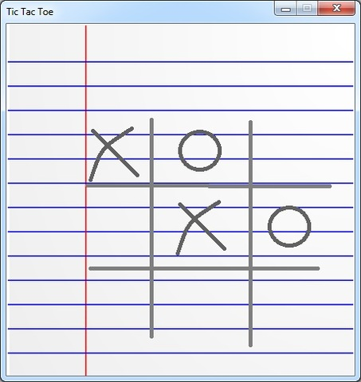
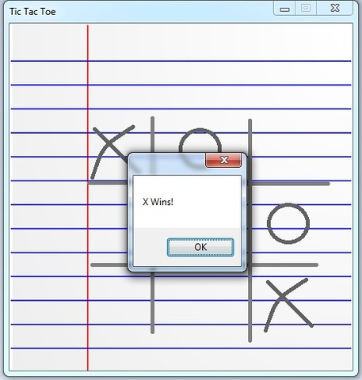
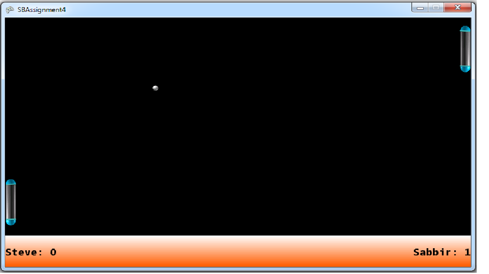
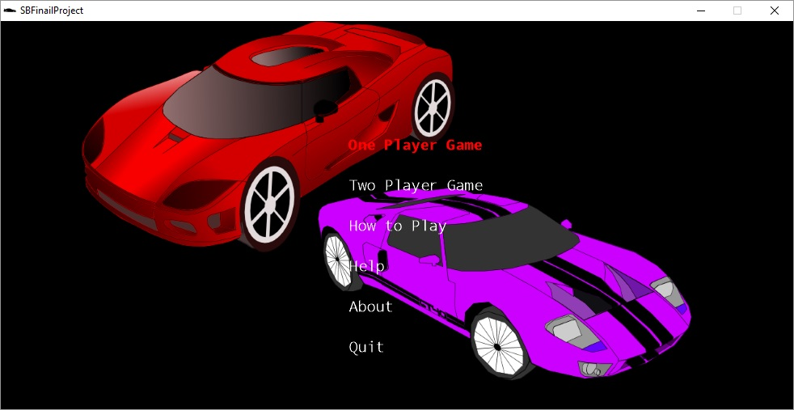
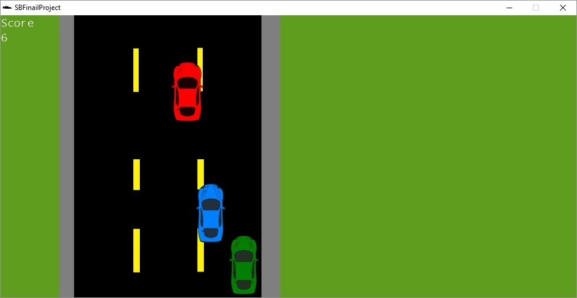
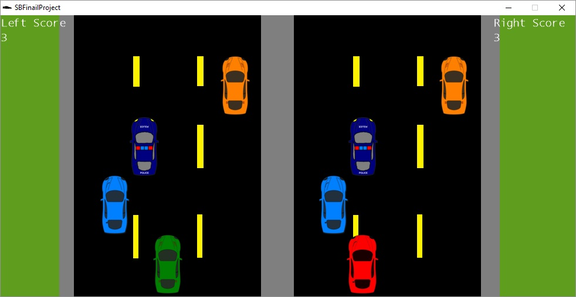
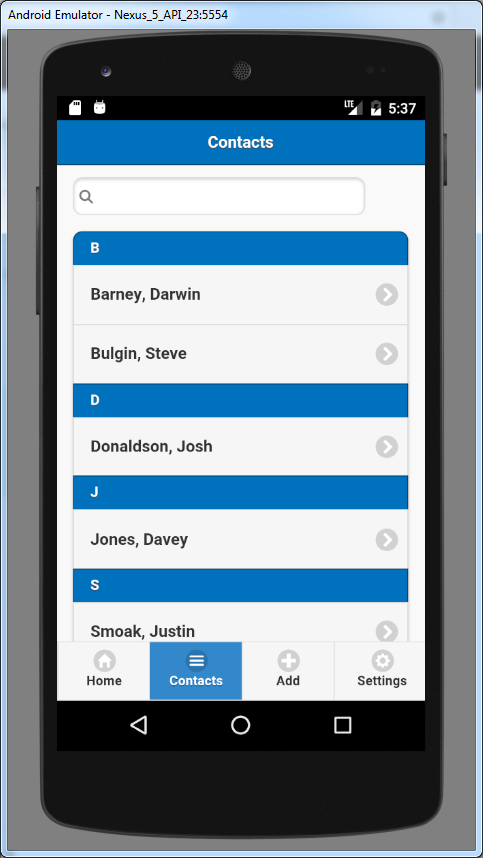
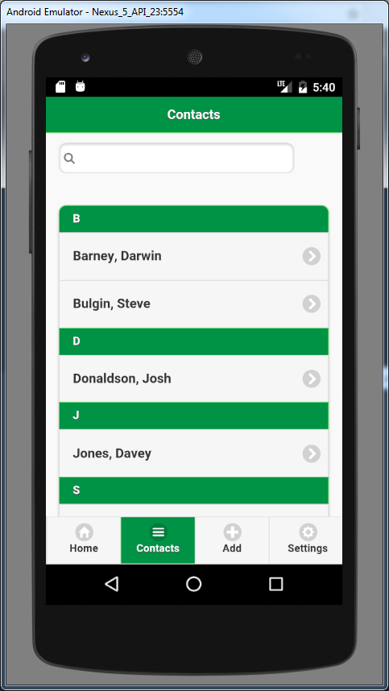

Projects
Here is a sampling of projects I've worked on
Arduino Stoplight
This started as a simple stoplight, but I kept thinking of bits to add to it
Git Repository: https://github.com/Steve-Bulgin/Arduino_Stoplight
PHP Webservice
This is a simple webservice I made to connect my Mobile Apps II assignment 2 To a MySQL database over the holidays
Git Repository: https://github.com/Steve-Bulgin/WebService
Conestoga Batches
Some batch files I made to save me some time at Conestoga College
Git Repository: https://github.com/Steve-Bulgin/SchoolBatchFiles
Capstone Project
This was the Systems Project for INFO3800. I worked with two other people to make an Android application for tablets and a desktop application that would track beehive data for apiary management.
Git Repository (Desktop): https://github.com/Steve-Bulgin/Desktop
Git Repository (Android): https://github.com/tanishacockburn/beeapiary
Tic Tac Toe
This was an assignment for PROG2370 Game Programming. It was done in C#. I was very pleased with how it turned out.
 Git Repository: https://github.com/Steve-Bulgin/TicTacToe
Pong
Pong game made in PROG2370
Git Repository: https://github.com/Steve-Bulgin/PROG2370A4
Final Project - PROG2370 Game Programming
This is a race car game I made as a final project. It has a one player mode and two player mode that is played on a mirrored track. It was made using C# and XNA


Git Repository: https://github.com/Steve-Bulgin/PROG2370Final
Mobile JQuery 3rd Assignment
This was an assignment for PROG3180: Mobile Apps I. It holds reviews entered by the user.
Git Repository: https://github.com/Steve-Bulgin/SBAssignment3
Mobile JQuery Final Project
This was the final project for PROG3180: Mobile Apps I. It's a contacts app. It held basic contact information and had a search filter and the user could pick between multiple color themes. I worked with Nadia Siraj on it.
 Git Repository: https://github.com/Steve-Bulgin/PROG3180---Final-Project
Mobile Apps II assignment 1
This was an assignment to make a temperature conversion app. I used listeners on the text fields to detect input which are then converted in the other text field.

Git Repository: https://github.com/Steve-Bulgin/PROG3210_A1
Mobile Apps II assignment 2
This was an assignment to build a score keeping app. It adds data to a SQLite database on the phone

Git Repository: https://github.com/Steve-Bulgin/PROG3210_A2
PROG2240 Assignment 4 - Java Web Programming
The assignments in this course were done in pairs and the assignments were cumulative. This is A4, therefore also includes A1, A2, A3 aswell. The task for the course was to build a jsp web project that connected to a MySQL database. We worked with Netbeans, Tomcat, and JUnit.
Git Repository: https://github.com/Steve-Bulgin/PROG2240_A4